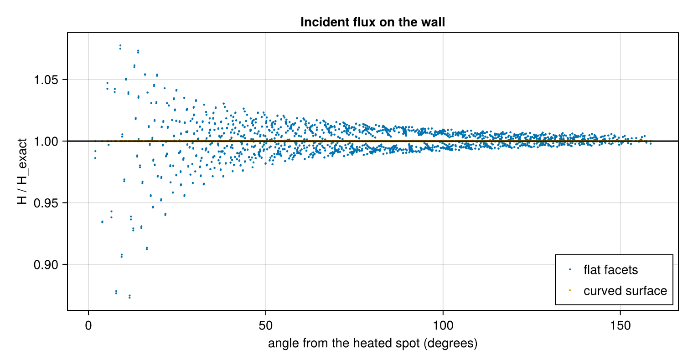
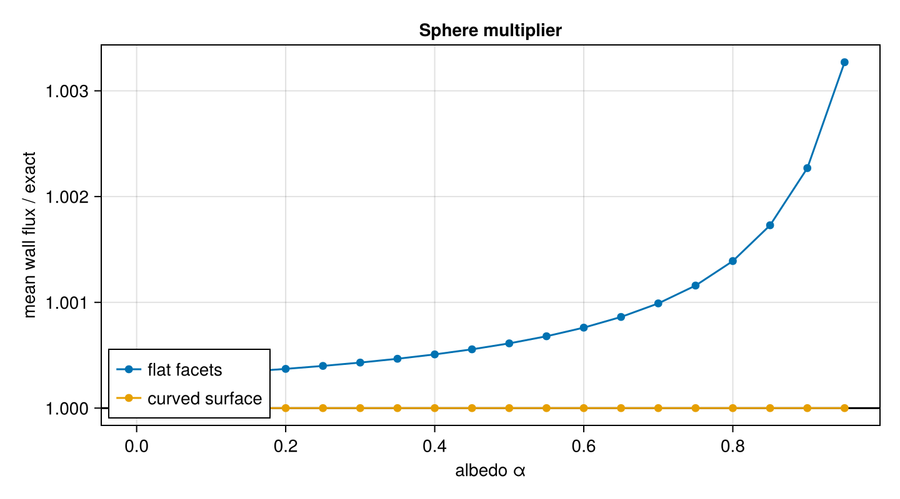
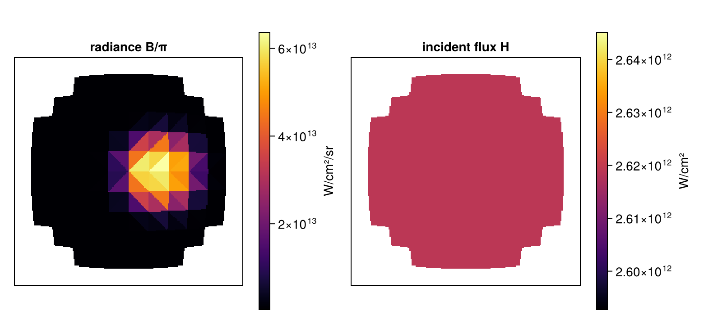

Integrating sphere
An integrating sphere is a hollow sphere with a diffusely reflecting interior and a small port. Light admitted through the port and scattered from any point of the wall illuminates every other point of the wall equally: for two points on a sphere of radius $R$ a distance $r$ apart, $\cos\theta_i = \cos\theta_j = r/2R$, so the view-factor kernel $\cos\theta_i\cos\theta_j/\pi r^2$ is the constant $1/4\pi R^2$. Ulbricht built photometers on this property in 1900, and it makes the sphere an exact test of a radiosity calculation.
A hohlraum is a cavity of the same kind: its gold wall re-emits most of the x rays it absorbs, and its laser entrance holes let radiation escape. This tutorial heats a spot on the wall of a spherical cavity with a laser admitted through a port, solves for the x-ray flux, and compares it with the integrating-sphere solution. The comparison shows why Briareus integrates radiation over the true curved surface rather than over the flat facets of the mesh. The tutorial introduces materials, apertures, curved surfaces, view factors, the radiosity solve and the energy balance.
using Briareus
using CairoMakie
using LinearAlgebra
using Printf
CairoMakie.activate!(type = "png")The sphere multiplier
Let the wall absorb laser power $P$ and convert a fraction $\eta$ of it into x rays, and let it re-emit a fraction $\alpha$ (the albedo) of the x rays that reach it. Every point of the wall sees the whole interior with the same kernel, so the incident flux $H$ is the same everywhere: the total power radiated by the wall, $\Phi$, divided by the area $A$ of the whole sphere, port included. The wall radiates its source and re-emits what it absorbs, $\Phi = \eta P + \alpha H A_w$, where $A_w = (1 - f)A$ is the wall area and $f$ the port's fraction. Hence
\[H = \frac{\eta P}{A}\,\frac{1}{1 - \alpha (1 - f)} ,\]
the direct flux $\eta P/A$ times the sphere multiplier $1/[1 - \alpha(1 - f)]$, independent of where the laser deposits its power; $H f A$ escapes through the port.
Geometry
The sphere has a radius of 2 mm. cubed_sphere_mesh divides it into triangles projected from the faces of a cube, with inward normals because the interior radiates. split_mesh cuts out the patches within 30° of $+z$, and aperture makes them a transparent port whose incident flux is the flux that escapes. The wall is a Material with albedo 0.5 and conversion efficiency 0.7.
A component can carry the exact surface its mesh approximates. With a SphereSurface, the radiation model integrates over the curved patches (true points, normals and areas); without one, it integrates over the flat triangles. Ray casting uses the triangles in both cases. Both versions are built here.
R = 2.0
α, η = 0.5, 0.7
function cavity(n; curved = true)
sphere = cubed_sphere_mesh(R; n, outward = false)
port, wall = split_mesh(sphere, c -> c[3] > R * cosd(30))
surface = curved ? SphereSurface(R) : nothing
return Target(Component(:wall, wall, Material(:wall; albedo = α, conversion = η); surface),
aperture(:port, port; surface))
end
curved_target = cavity(16)
flat_target = cavity(16; curved = false)Target with 2 components, 3072 elements, 3072 triangles
wall surface wall 2896 elements area 46.9870 mm²
port aperture black 176 elements area 3.1749 mm²
Heating a spot
A beam enters through the port from directly above and heats a spot on the lower hemisphere. The reference ray trace delivers it to the wall, apart from a few rays of the far wings that graze the rim of the port and strike the outside of the sphere.
beam = Beam("B"; theta = 0, phi = 0, power = 1.0, spot = omega_spot(:SG4), fnumber = 6.7,
aim = (0.3, 0.0, -1.0))
function sphere_solution(target)
dep = raytrace_deposition(target, [beam]; nspot = 61)
wall = elements(target, :wall)
A = sum(target.elem_area)
f = sum(target.elem_area[elements(target, :port)]) / A
H_exact = η * sum(dep.element[wall]) / A / (1 - α * (1 - f))
model = RadiationModel(target)
return (; target, dep, wall, A, f, H_exact, model, solution = solve(model, dep))
end
curved = sphere_solution(curved_target)
flat = sphere_solution(flat_target)
@printf("laser power on the wall %.6f TW\n", sum(curved.dep.element[curved.wall]))laser power on the wall 0.999825 TWUniformity
RadiationModel computes the view factors between all elements, and solve returns the radiosity $B$ and the incident flux $H$ of every element. The incident flux on the wall, against the angular distance from the center of the heated spot:
function angle_from_spot(s)
center = normalize(sum(s.dep.element .* s.target.elem_centroid))
return [acosd(clamp(dot(normalize(s.target.elem_centroid[e]), center), -1, 1)) for e in s.wall]
end
fig = Figure(size = (760, 400))
ax = Axis(fig[1, 1], xlabel = "angle from the heated spot (degrees)", ylabel = "H / H_exact",
title = "Incident flux on the wall")
scatter!(ax, angle_from_spot(flat), flat.solution.H[flat.wall] ./ flat.H_exact,
markersize = 3, label = "flat facets")
scatter!(ax, angle_from_spot(curved), curved.solution.H[curved.wall] ./ curved.H_exact,
markersize = 3, label = "curved surface")
hlines!(ax, [1.0], color = :black)
axislegend(ax, position = :rb)
fig
On the flat facets the flux is uniform far from the spot but scattered by several percent near it. Next to a flat facet, a neighboring facet is tilted by about half an element's angular size, while on the sphere the cosines of nearby points are only of order $r/2R$; the facets therefore misstate the exchange between nearby elements by an amount of order one, and the spot, which holds most of the source in a few elements, makes that error visible in the flux of its neighbors. Refining the facets reduces the scatter only in proportion to the element size. On the curved surface the flux is uniform to round-off:
for (label, s) in (("flat facets", flat), ("curved surface", curved))
h = s.solution.H[s.wall] ./ s.H_exact
@printf("%-15s H/H_exact %.6f – %.6f\n", label, extrema(h)...)
endflat facets H/H_exact 0.872930 – 1.077658
curved surface H/H_exact 1.000000 – 1.000000Global quantities
The mean flux, the power escaping through the port, and the energy balance from energy_balance:
for (label, s) in (("flat facets", flat), ("curved surface", curved))
Aw = s.target.elem_area[s.wall]
b = energy_balance(s.solution)
@printf("%-15s mean H/H_exact %.6f escape/(H f A) %.6f source − sinks %.1e TW\n", label,
sum(s.solution.H[s.wall] .* Aw) / sum(Aw) / s.H_exact,
b.escaped[:port] / (s.H_exact * s.f * s.A),
b.source - sum(values(b.absorbed)) - sum(values(b.escaped)) - b.lost)
endflat facets mean H/H_exact 1.000612 escape/(H f A) 1.001723 source − sinks -7.8e-16 TW
curved surface mean H/H_exact 1.000000 escape/(H f A) 1.000000 source − sinks -6.8e-15 TWThe faceted cavity has the right mean to 0.1% because the misstated local exchanges nearly cancel in sums. The sphere multiplier grows rapidly as the albedo approaches one, and so does the amplification of any radiation the view factors lose. Over a range of albedos:
function mean_ratio(s, a)
sol = solve(s.model, s.dep; albedo = [e in s.wall ? a : 0.0 for e in 1:nelements(s.target)])
Aw = s.target.elem_area[s.wall]
exact = η * sum(s.dep.element[s.wall]) / s.A / (1 - a * (1 - s.f))
return sum(sol.H[s.wall] .* Aw) / sum(Aw) / exact
end
albedos = 0.0:0.05:0.95
fig = Figure(size = (720, 400))
ax = Axis(fig[1, 1], xlabel = "albedo α", ylabel = "mean wall flux / exact",
title = "Sphere multiplier")
hlines!(ax, [1.0], color = :black)
scatterlines!(ax, albedos, [mean_ratio(flat, a) for a in albedos], label = "flat facets")
scatterlines!(ax, albedos, [mean_ratio(curved, a) for a in albedos], label = "curved surface")
axislegend(ax, position = :lb)
fig
The multiplier reaches $1/[1 - 0.95(1-f)] \approx 14$ at the right of the plot. The curved calculation follows it to round-off; the rows of its view-factor matrix sum to one to round-off, because the sphere's kernel is integrated exactly:
for (label, s) in (("flat facets", flat), ("curved surface", curved))
@printf("%-15s largest |closure error| %.1e\n", label, maximum(abs.(closure_error(s.model.F))))
endflat facets largest |closure error| 5.1e-04
curved surface largest |closure error| 7.7e-15Images
Looking into the sphere through the port, the radiosity shows the heated spot while the incident flux is uniform, so uniform that its color scale is given a ±1% range about the mean. radiance converts radiosity to the Lambertian radiance an imager records.
camera = OrthoCamera((0, 0, -1); up = (0, 1, 0), width = 2.2, nx = 220)
fig = Figure(size = (780, 360))
for (i, (label, field)) in enumerate(("radiance B/π" => radiance(curved.solution),
"incident flux H" => curved.solution.H))
img = render(curved.target, to_Wcm2.(field), camera)
panel = Axis(fig[1, 2i-1], title = label, aspect = DataAspect())
hidedecorations!(panel)
vals = filter(isfinite, img)
crange = i == 1 ? extrema(vals) : (0.99, 1.01) .* (sum(vals) / length(vals))
hm = heatmap!(panel, reverse(img; dims = 1)'; colormap = :inferno, colorrange = crange)
Colorbar(fig[1, 2i], hm, label = i == 1 ? "W/cm²/sr" : "W/cm²")
end
fig
What this checks
- On the curved surface, the radiosity solve reproduces the integrating-sphere flux on every element to round-off, wherever the laser deposits its power, and the sphere multiplier over albedos from 0 to 0.95.
- Energy is conserved to round-off: the x-ray source equals the power absorbed by the wall, escaping through the port, and lost.
- Flat facets standing in for the sphere get the mean right to 0.1% but misstate the local exchange near a concentrated source by several percent. This is why hohlraum walls, end caps, entrance holes and capsules carry their exact surfaces.
This page was generated using Literate.jl.